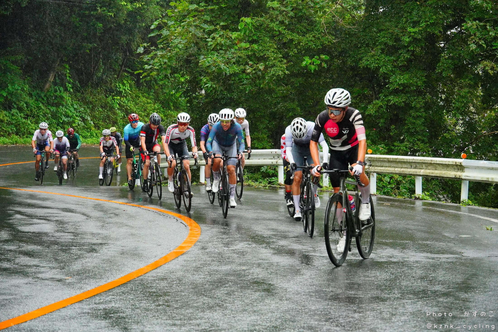
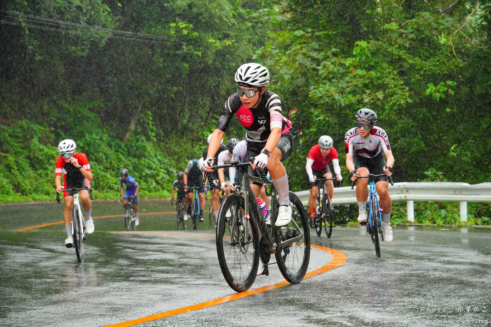

My first cycling race victory. By the time I stepped onto the podium, the whole day already felt slightly unreal.
Before the start
I had been worried about rain because the course included several technical downhill corners. As a first-time participant, I was not allowed to ride the course beforehand, so my plan was to take the opening descent carefully and learn the lines on the first lap.
The alarm went off at 04:30 after 5 hours and 40 minutes of sleep. My HRV was 86. It rained throughout the drive to Chichibu, making it clear that the entire race would be wet. I had raced in the rain at Fuji Speedway the previous week, but a wide circuit feels very different from a closed public road with blind corners.
Part of me wanted to DNS. The entry fee was already paid, though, so I told myself I would at least collect the race number and participation gift. Once I arrived, the familiar logic took over: I had come this far, so I might as well race.
It was 20°C, wet, and cold at registration, so I put on nearly all the winter clothing I had brought. Ninety-eight riders had entered my category; seventy eventually took the start. Before heading to the line, I drank a packet of beetroot juice for a little extra VO2 max confidence, whether physiological or psychological.
Lap 1: attacking early
After the 08:50 opening ceremony, the Intermediate field started first. Our General Beginner group rolled away 90 seconds later. I moved toward the front-left of the bunch, where there was more space and fewer wheels directly in front of me.
When the lead motorcycle accelerated and the race went live, nobody attacked immediately. I did not want to sit behind a wheel and drink road spray, so I accelerated on the flat and went off the front. A few riders tried moves of their own, and I responded hard each time. William, riding behind me, said I had gone too early. He was right. I was spending too much energy, but I kept working at the front and tried to give my friends some shelter.
The first climb was 0.98 km with 74 m of elevation gain at an average gradient of 7.5%, winding continuously through the forest. I held around 390 W for a while, then finally ran out of room and the group caught me. Everyone was much faster than I had expected.
The descent was every bit as technical as I had feared. I ran wide once while trying to follow the riders ahead, losing a little time. Every braking zone became a chorus of wet Shimano discs, but I made it through safely.


Lap 2: recover and observe
Once I had been caught, I stayed in the group and tried to recover. My fuel was the budget version of an energy gel: a 7-Eleven ogura yokan. There were more attacks, but none escaped; they simply raised the speed of the bunch. I still lost a few places on the second climb, although the effort felt much more controlled than on lap one. Everyone else was beginning to fatigue too.
Riders from the High School Beginner category gradually caught us, and the two fields began riding together. Their attacks were sharper and more aggressive. I did everything I could to follow, thinking that if I could stay with their moves, I might have a real chance of getting away from my own category.
Lap 3: the decisive move
On the final climb, I entered the corner on the outside and carried more speed. The high school riders launched their last attack, and I committed fully to following them. With about 300 metres left to the summit, my calf began to tighten, possibly because I had changed cadence too quickly. I briefly reduced the power, the pain eased, and it did not develop into a full cramp.
On the descent, nobody from my category came back. For the first time, I thought a podium might really be possible. I exchanged turns with one of the high school riders before the sprint. In the final hundred metres I was still cheering the three high school riders ahead of me:
あと100メートル、頑張れ！ One hundred metres to go. Keep pushing!
After the line, another rider congratulated me. I asked whether there had really been nobody from our category ahead. That was the moment I learned I had won.
Worth every wet kilometre
Congratulations to William on sixth place and to Fumi on second in the women's race.
I was still shivering in a long-sleeve jersey during the podium ceremony. In weather like this, reaching the finish safely is already an achievement, regardless of the result. Still, every cold and nervous moment was worth it for the instant I crossed the line.
This was only the beginner category, and I still have a long way to go. But a first victory is a first victory. I will keep training and see where the next race takes me.